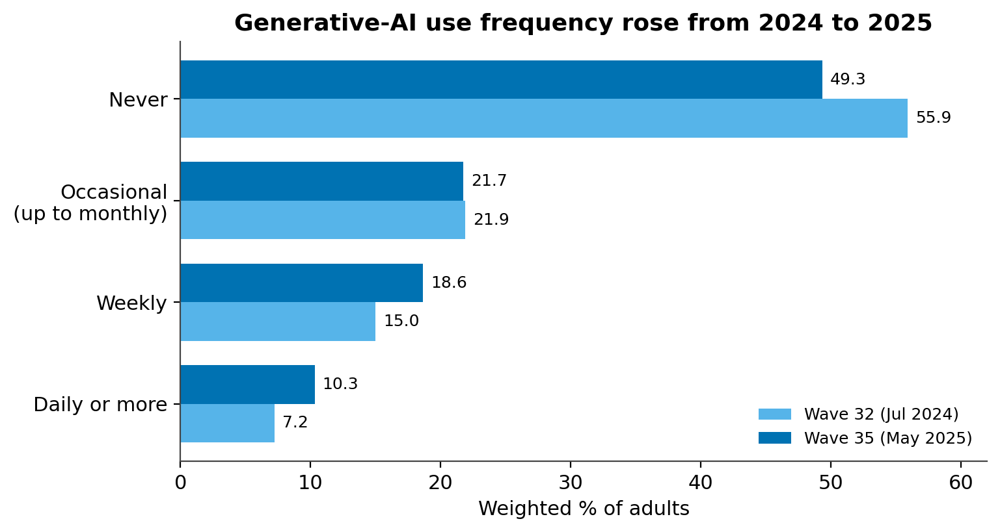
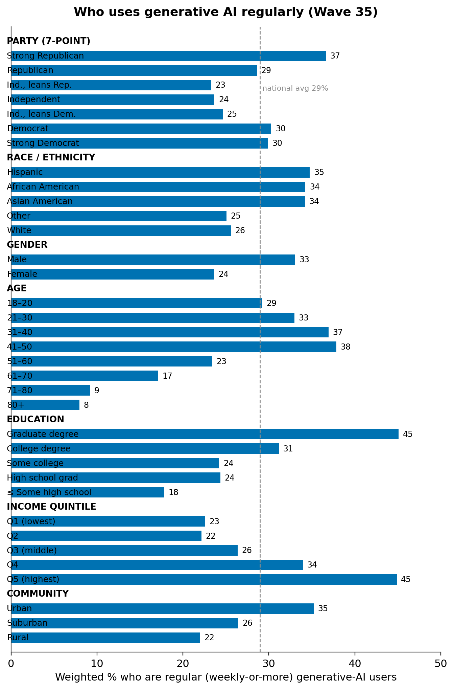
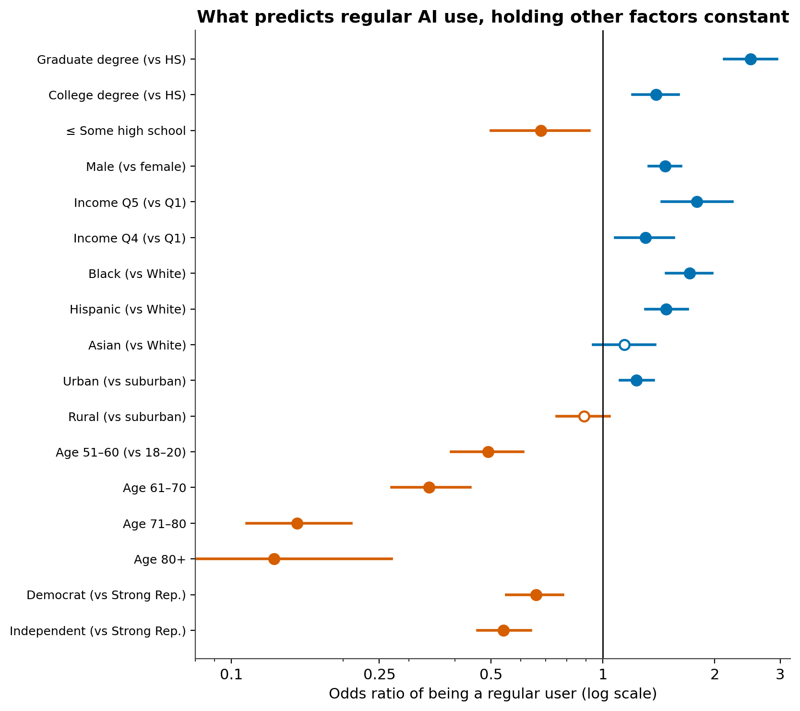
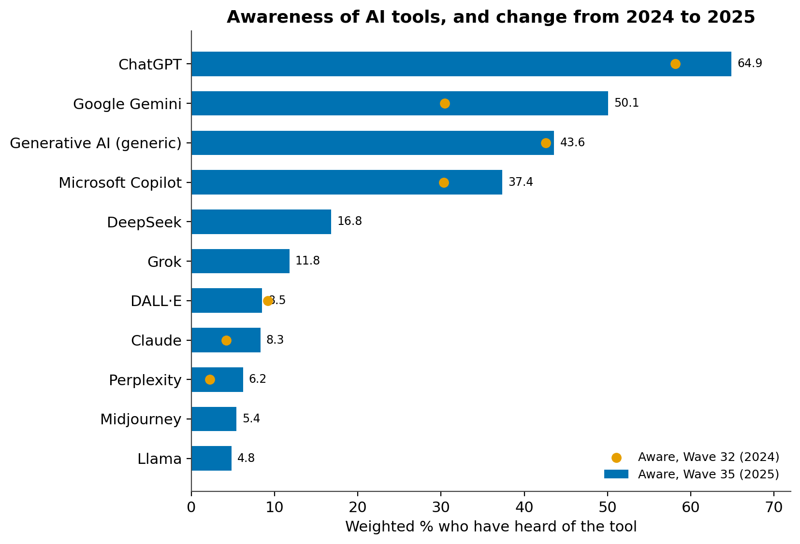
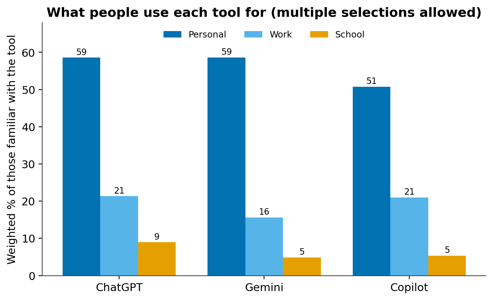
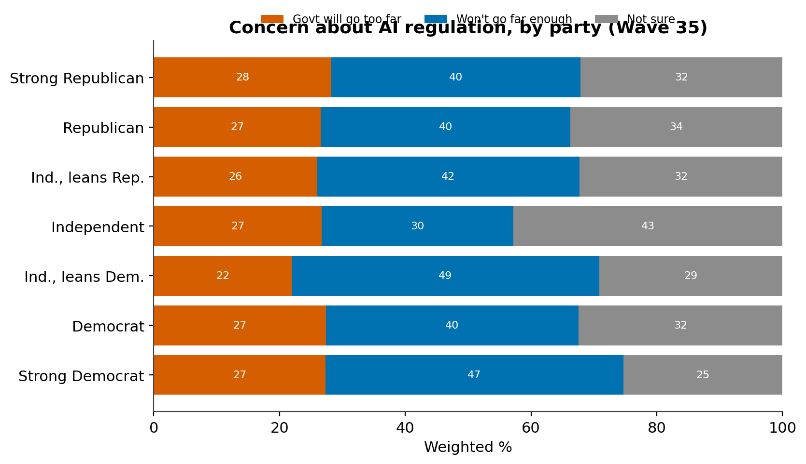
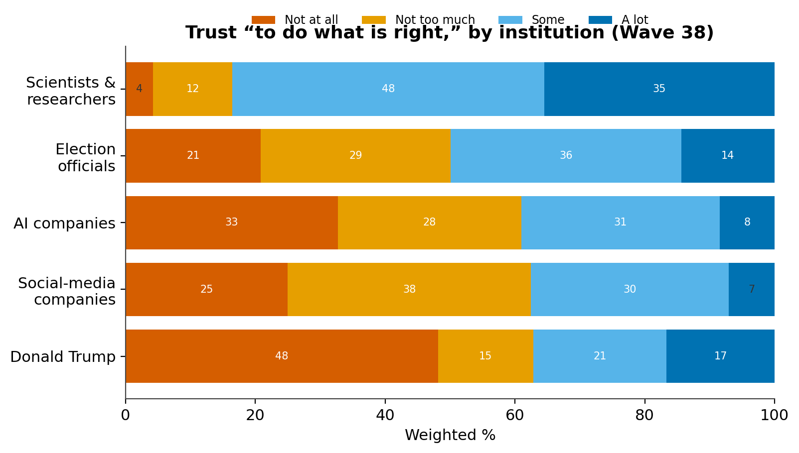

America Meets AI
Who uses artificial intelligence, which tools they know, what they use it for, and what they believe about it — from a 30,000-person national panel
Source: CHIP50 (Civic Health and Institutions Project / COVID States Project). Primary wave: Wave 35, fielded April 10 – June 5, 2025 (unweighted n = 31,062). Trend and context also draw on Wave 32 (Jun–Jul 2024), Wave 37 (Dec 2025–Jan 2026), and Wave 38 (early 2026). All figures are weighted population estimates; because the AI battery was fielded to different subsets of each wave, every figure carries its own analyzed N. A CHIP50 report for techandsociety.ai.
Key Takeaways
- Regular use jumped in a year. The share of Americans using generative AI at least about once a week rose from 22.2% to 29.0% between mid-2024 and mid-2025, while the share who never use it fell from 55.9% to 49.3%.
- It's an education, age, and income story — not a partisan one. Regular use runs from 45% among those with a graduate degree to 18% among those with a high-school education or less; from ~37% among adults 31–50 to under 10% among those over 70; and from 23% in the lowest income quintile to 45% in the highest.
- The gender gap is one of the largest divides. Men are regular users at 33% versus 24% of women — a gap that holds at 1.5× the odds even after controlling for age, education, income, and geography.
- AI is more urban than rural. Regular use is 35% urban, 26% suburban, 22% rural; the urban premium survives controls, while the rural–suburban gap reflects rural areas being older and less educated.
- The race gap runs opposite the old digital divide. Black (34%) and Hispanic (35%) Americans are more likely than White Americans (26%) to be regular users, and the gap widens under controls.
- Awareness far outruns use. 64.9% have heard of ChatGPT (up from 58.1%); Gemini awareness nearly doubled to 50.1%. Among those who know a tool, use is mostly personal and skews to text and research over images, video, or audio.
- A plurality want more AI regulation. 40.5% are more concerned government won't go far enough regulating AI vs. 26.7% that it will go too far; worry about over-regulation is a 22–28% minority in every partisan group. Separately, 42% expect AI to have no impact on their own job.
- Americans trust AI companies about as much as social media — far less than scientists. Only 39% express at least some trust in AI companies, versus 84% for scientists.
Introduction
Generative AI moved from novelty to infrastructure faster than almost any consumer technology in memory. By mid-2025, roughly a third of U.S. adults reported having used ChatGPT — about double the share two years earlier (Pew Research Center, June 2025). Across six wealthy countries, the Reuters Institute found any use of generative AI rose from 40% to 61% in a single year, with weekly use climbing from 18% to 34% (Reuters Institute, 2025). Yet most measurement of this shift rests on samples of a few thousand people, which cannot support state-level detail or named-tool resolution.
CHIP50 asks its AI questions of tens of thousands of respondents per wave, and it asks them repeatedly. This report uses that scale to track the rate of change in adoption across two waves a year apart, to describe awareness and use of a dozen named tools, to see what people actually do with them, and to place AI in the American landscape of belief and trust. A note on framing: Americans are markedly more concerned than excited about AI in daily life — 51% concerned versus 11% excited in Pew's August 2024 reading, and 60% worry regulation will do too little rather than too much (Pew Research Center, April 2025). Adoption and enthusiasm are not the same thing, and this report keeps them separate.
How many Americans use generative AI — and how often
Regular generative-AI use rose nearly seven points in a year, driven by people moving from non-use into frequent use. On a seven-point frequency scale (1 = never … 7 = multiple times a day), 49.3% of Americans said in May 2025 that they never use generative AI, while 29.0% used it at least about once a week — up from 55.9% never and 22.2% weekly-or-more a year earlier. Both changes clear the ≥5-point threshold for a substantively notable two-wave shift. The middle 'occasional' band barely moved while the 'never' band shrank and the weekly and daily bands grew, so the year's growth came from former non-users becoming regular users rather than existing users intensifying. The rise appears within both genders, ruling out shifting sample composition.

The adoption gradient: who uses AI
Education, age, income, gender, and geography divide AI users sharply — and every one of these divides survives statistical controls. Party barely matters. A survey-weighted logistic regression (Figure 3; n = 9,352) confirms each pattern as an independent association. Education is the steepest gradient: a graduate degree carries about 2.5× the odds of regular use versus a high-school diploma. Age is nearly as sharp — flat and high from 18 through 50, then a cliff, with the 80+ group at an eighth the odds of the youngest. Income rises monotonically, concentrated at the top (top quintile 1.8× the bottom).
Gender is one of the largest and most durable divides, and it deserves attention precisely because AI is often assumed to be gender-neutral. Men are regular users at 33.0% versus 24.0% of women, and the gap barely moves under controls (men 1.47× the odds, p < .001). It is on the order of the urban–rural divide and larger than any partisan difference — the kind of gap that compounds if AI fluency becomes an economic advantage.
The urban–rural divide is real but narrower than it looks. Regular use is 35.2% urban, 26.4% suburban, 22.0% rural. In the regression the urban premium survives (1.23× vs. suburban), but the rural–suburban gap does not: rural areas look lower mainly because their residents are older and less educated, not because rural life independently depresses AI use.
Race reverses the usual divide. Black, Hispanic, and Asian Americans are all ~9 points more likely to be regular users than White Americans, and the gap grows under controls (Black 1.71×, Hispanic 1.48×). Because the White population is older, its lower raw adoption understated the minority-adoption edge — a suppression effect, and the clearest equity finding here. Party, by contrast, is a story of intensity, not direction: Strong Republicans lead, Democrats follow, and independents lag.


The awareness funnel, tool by tool
Two-thirds of Americans know ChatGPT by name; awareness thins fast for every other tool. The Gemini rebrand worked — awareness of Google's assistant nearly doubled (30.5% → 50.1%) as 'Bard' was retired into 'Gemini.' The new entrants landed unevenly: DeepSeek reached 16.8% awareness by May 2025, ahead of Grok (11.8%), reflecting coverage around DeepSeek's January 2025 release.

The gap between knowing a tool and using it is the real headline. Awareness of ChatGPT falls only gently across age and education while regular use falls steeply — the funnel narrows as it descends:
| Group | Aware of ChatGPT % | Regular genAI user % |
|---|---|---|
| Age 18–20 | 82.4 | 29.2 |
| Age 31–40 | 68.5 | 36.9 |
| Age 61–70 | 57.2 | 17.1 |
| Age 71–80 | 56.9 | 9.2 |
| Age 80+ | 44.3 | 8.0 |
| Graduate degree | 81.8 | 45.1 |
| High school grad | 53.4 | 24.4 |
| ≤ Some high school | 44.0 | 17.8 |
Table 1. ChatGPT awareness vs. regular generative-AI use, by age and education, Wave 35, weighted %. Awareness base n = 21,118; regular-use base n = 9,378.
Even among Americans in their seventies, 57% have heard of ChatGPT but only 9% use generative AI regularly. Awareness is broad; habitual use is concentrated among the young and highly educated.
What people use AI for
Among people who know these tools, use is mostly personal rather than for work or school, and text and research dominate over images, video, or audio. Personal use runs 51–59% across tools, with work (16–21%) and especially school (5–9%) trailing. By function, text (32–42%) and research (35–38%) lead; image (16–19%), video (9–11%), and audio (7–9%) uses are secondary. CHIP50 does not measure employment or enrollment, so work use cannot be conditioned on people who work, nor school use on students; the closest proxy is age, and it behaves as expected — for ChatGPT, work use rises from 21% of all familiar users to 29% among 31–50-year-olds, and school use jumps from 9% to 47% among 18–20-year-olds.

What Americans believe about AI: regulation and jobs
A plurality want more AI regulation, not less — and worry about over-regulation is a minority position in every partisan group. Asked whether they were more concerned government will go too far or not go far enough regulating AI, 40.5% said not far enough, 26.7% too far, and 32.7% were unsure. The striking result is how flat the anti-regulation position is: the 'go too far' share sits between 22% and 28% across all seven party groups. Appetite for more regulation is somewhat stronger on the Democratic side, and pure independents are the most unsure — but in no group does fear of over-regulation reach a plurality.

On jobs, most Americans do not expect AI at their own desk: asked how much impact AI will have on their own job over the next five years, 42.2% said no impact, 32.0% a major impact, and 25.8% a minor impact. Americans see the technology arriving, but most do not yet see it arriving for them. This result matches verified external polling: Pew finds 60% of adults are more concerned the government won't go far enough regulating AI than that it will go too far.
Trust in AI, in context
Only about two in five Americans trust AI companies 'to do what is right' — roughly the same low level as social-media companies, and far below scientists or even election officials. Combining the top two points of a four-point scale, 39.0% express at least some trust in AI companies and 61.0% little or none. AI and social media occupy the same low tier: the public files AI not as neutral science but as another Silicon Valley institution to watch.

The partisan pattern inverts the usual expectation: across the seven-point scale, Strong Republicans are the most trusting of AI (49.6% at least some trust) and pure independents the least (30.9%), echoing the Republican tilt in adoption. CHIP50's 61% 'little or no trust' aligns with Pew's 59% who have little or no confidence that U.S. companies will develop AI responsibly.
Conclusion
Four findings anchor this report. Generative-AI use is rising fast — up nearly seven points in weekly-or-more use in a single year — and it rises by pulling non-users into the fold. Who adopts is sorted by education, age, income, gender, and geography far more than by party, and — reversing the historical digital divide — Black and Hispanic Americans out-adopt White Americans once age and income are held constant. On policy the public leans one way with unusual consensus: a plurality want more regulation, and fear of over-regulation is a minority position everywhere, even as most expect AI won't reach their own job. And Americans hold the companies behind AI at arm’s length, trusting them about as little as social-media firms and far less than scientists.
Methods
Data source. CHIP50 panel via the CHIP50 Social Media MCP. All estimates are weighted with the panel survey weight; Wave 35 weights to race/ethnicity, age, gender, education, 2020 presidential vote, and urban/rural. Response-category labels were verified against the AI-module codebook.
Measures. “Regular user” = ai_freq_genai points 4–7 (about once a week or more). Awareness = ai_know_<tool> (select-all). Tool use = ai_why_/ai_how_ (select-all, asked of those familiar with each tool). Regulation = ai_regulation (go too far / not go far enough / not sure). Jobs = ai_work_impact. Trust = pol_trust_ai and battery (1 = not at all … 4 = a lot). Partisanship uses the 7-point party scale, verified as 1 = Strong Republican … 7 = Strong Democrat. Income quintiles pair the ten income brackets (not equal-population quintiles). Employment and enrollment are not measured; work/school use is age-proxied.
Module-selection caveat. The ai_freq_genai frequency item was answered by ~30% of each wave, a subset skewing younger and more male than the full wave (54% vs. 47% male), so weighted levels for that item are approximate. The wave-to-wave change (which appears within each gender) and the regression-based cross-demographic comparisons are robust to this selection. Cells with unweighted n < 10 are suppressed. Differences are called independent associations only where a survey-weighted regression coefficient is significant at p < .05; standard errors are model-based, not design-based; no causal language is used for descriptive comparisons.
Sources
CHIP50 Wave 35 (Civic Health and Institutions Project / COVID States Project), fielded April 10–June 5, 2025 (unweighted n = 31,062), with trend and context from Waves 32, 37, and 38. All figures are weighted estimates.